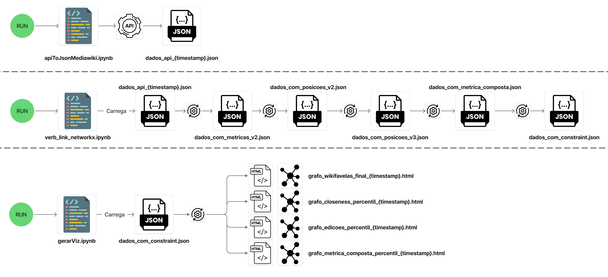
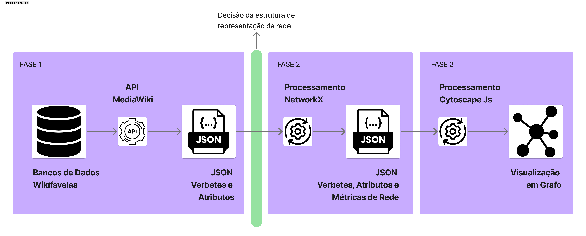
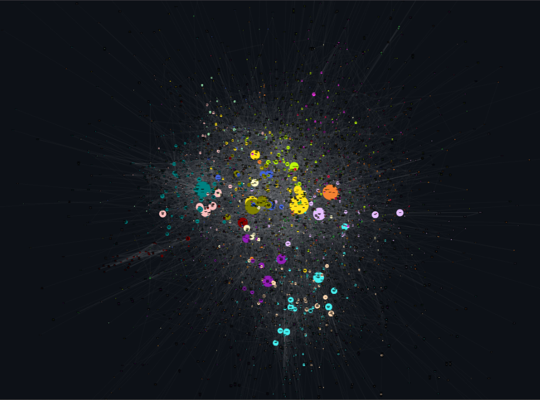

Uma Análise da Rede Sociotécnica do Wikifavelas
Glauber Guimarães Batista Silveira
Trabalho de Conclusão de Curso - Sistemas de Informação
Universidade Federal Fluminense
Contexto: Conhecimento, Poder e Plataformas
Produção de Conhecimento Centralizada
- Historicamente, o saber foi centralizado (escribas, bibliotecas, universidades).
- Enciclopédias tradicionais funcionavam como **porta-vozes** de elites.
O Paradoxo Digital da Wikipédia
- Promessa de democratização do saber.
- Crítica: O ideal de "neutralidade" acaba por reproduzir vieses sistêmicos (gênero, raça, geográfico).
Objeto de Estudo: O Wikifavelas
O que é? Uma plataforma colaborativa sobre favelas e periferias, concebida como um projeto político-epistemológico.
Gênese: Articulação entre Fiocruz, movimentos sociais e academia.
Missão Contra-Hegemônica: Construir narrativas a partir da perspectiva das favelas, valorizando saberes populares e disputando sentidos.
Marielle Franco como Actante Simbólico: O nome inscreve no projeto uma luta por direitos, memória e justiça.
Problema de Pesquisa e Objetivos
Pergunta Central
Como o Wikifavelas **se torna** e **atua** como uma rede de produção de conhecimento?
Problema de Pesquisa
Como atores **humanos** (colaboradores, conselho) e **não-humanos** (plataforma, verbetes, interface, governança) se associam para constituir o conhecimento sobre as favelas?
Objetivo
Mapear e analisar a estrutura sociotécnica da rede de conhecimento do Wikifavelas para identificar centralidades, isolamentos e possíveis buracos estruturais.
Arcabouço Teórico-Metodológico
Teoria Ator-Rede (TAR)
Oferece a sensibilidade para "seguir os atores" e entender a rede como um processo.
Conceitos-chave:
- Actante (agência de humanos e não-humanos)
- Tradução (o processo de construção da rede)
- Inscrição (a materialização das relações)
- Simetria (analisar todos os atores com o mesmo vocabulário)
Ciência de Redes Complexas
Operacionaliza a TAR, fornecendo ferramentas para "ver" e medir as associações.
Análise da Topologia:
- Centralidades (poder e influência)
- Comunidades (clusters temáticos)
- Estrutura geral do grafo
Diagrama do Pipeline de Dados

Metodologia: A Pesquisa como Ato de Inscrição
O pipeline de pesquisa não é neutro. É um ato de **tradução** e **inscrição** que transforma a realidade complexa da wiki num grafo analisável.

Fase 1: Extração (API) → Fase 2: Processamento (NetworkX) → Fase 3: Visualização (Cytoscape.js)
Números Gerais: Estrutura e Escala
Topologia da Rede
Nós: 3.552 Verbetes
Arestas: 15.301 Hiperlinks internos
Dados Gerais
~2.400 colaboradores cadastrados
678 Editores únicos
1577 categorias únicas

Lendo o Grafo: A Gramática Visual da Rede
Nós (Círculos) Cada nó representa um **verbete** do Wikifavelas.
Arestas (Linhas) Cada aresta representa um **hiperlink** de um verbete para outro.
Tamanho do Nó Proporcional ao **PageRank**. Nós maiores são mais influentes.
Cor do Nó Representa a **Comunidade Temática** (cluster) a que o verbete pertence.
Essa visualização transforma dados em um argumento visual sobre a estrutura de poder e conhecimento da plataforma.
Métricas Fundamentais de Análise
Centralidade de Grau (Degree): É a medida mais direta de influência, contando o nº de conexões de um nó. Identifica os "hubs" locais.
Centralidade de Intermediação (Betweenness): Calcula a frequência com que um nó aparece nos caminhos mais curtos entre outros pares de nós. Um verbete com alta intermediação atua como "ponte" para o fluxo de informação entre diferentes clusters.
Centralidade de Proximidade (Closeness): Mede a eficiência de um nó em alcançar todos os outros. É calculada como o inverso da soma das distâncias mais curtas para todos os demais. Alta proximidade significa rápida disseminação de informação.
PageRank: Atribui um peso de importância recursiva. Diferente do Grau, considera que links de nós já importantes **transferem mais prestígio**. Um verbete é central se recebe links de outros verbetes também centrais.
Restrição (Constraint): Mede se um verbete está "preso" a um cluster. Baixa restrição indica um verbete interdisciplinar.
Próximos Passos: Redes Heterogêneas
A análise atual focou em uma rede **unimodal** (apenas verbetes). O próximo passo é explorar **redes heterogêneas**, que contêm múltiplos tipos de nós.
Essa abordagem permite investigar a interação entre verbetes e outras entidades (Categorias, Autores), revelando padrões estruturais ocultos.
Rede Heterogênea I: Verbetes e Categorias
Estrutura: Uma rede com dois tipos de nós (verbetes e categorias), onde uma aresta conecta um verbete à sua categoria.
Questões de Pesquisa:
- Quais categorias são mais centrais na organização do conhecimento?
- Podemos identificar clusters temáticos baseados no compartilhamento de categorias?
- Categorias que atuam como "pontes" conectam quais áreas do conhecimento?
Rede Heterogênea II: Verbetes e Autores
Estrutura: Uma rede com nós de verbetes e de autores, onde uma aresta significa que um autor editou um verbete.
Questões de Pesquisa:
- Quais são os autores mais influentes na construção da enciclopédia?
- Existem "comunidades de prática" de autores que editam os mesmos verbetes?
- Autores que editam verbetes-ponte são, eles mesmos, centrais na comunidade?
Obrigado!
Glauber Guimarães Batista Silveira
glauber.guimaraes@id.uff.br
Perguntas?